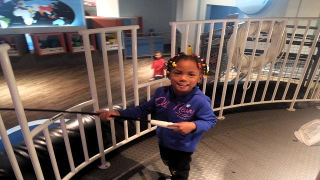
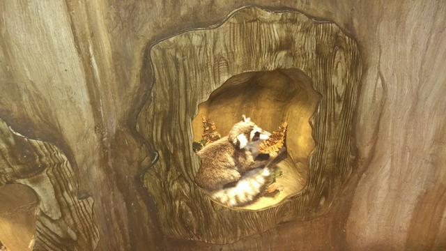
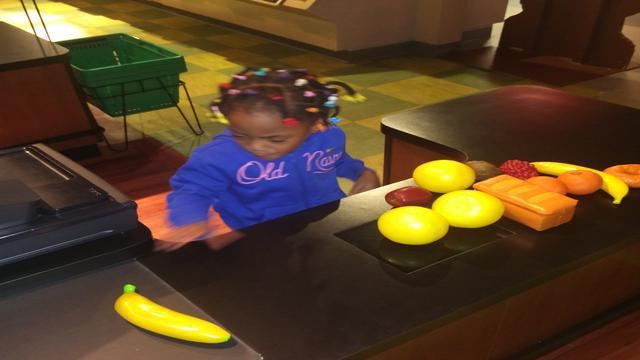

I recently visited the Virginia Children's Museum in Portsmouth, VA
with my family. This site details some of the things we saw and experienced while
at the museum.
This section of the museum displayed exhibits from the local fire and police departments. They also had a real police
motorcycle and a life-size fire truck replica. Children can sit on and in the vehicles. Behind the truck, they could adjust the dials
and see the current water pressure. There was also a simulator
where you could practice putting out a fire. There were also replica early-era fire trucks on display.
Local Industry
These exhibits were of local industry in the region. Specifically shipping and rail operations.
The shipping exhibit was provided by Maersk. It was a simulator that allowed children to operate
the gandry cranes in order to move shipping containers back and forth between a cargo ship and a semi truck.
The train section had a full room full of model trains, to include a sand table wich showed rail operations in a mock area.
This area included small tubes that children could climb into and 'pop-up' into the sand table area to
get a close up of the trains. The area as previous areas had walls of model train cars showing the evolution of train cars
throughout the years.
The final area we saw here was a mock-up tugboat where the importance of water safety was emphasized by having Childrens
life preservers available for wear. The tugboat hosted an exhibit where it showed the fish available in the bay as well as magnetic
fish cut-outs of them that the children could 'fish' for.

The Environment and Weather
These exhibits showed the results of not recycling in the environment as well as a mock kitchen to show children
how to conserve elctricity and water in the home. It further showed several animals in their natural habitat, as well as
showed examples of a microscopic life such as plankton.
In addition to plants and animal life this section had
additional exhibits showing the water cycle, weather, and the effects waterfall has on the environment. Specifically showing
how river blockages can cause effects down-stream.

Learning about Everyday Life
These exhibits were all related to experiencing commmon things that grown-ups do
such as shopping and going to the bank. Exhibits also focused on learning about sound. Each exhibit was interactive. The
bank had a check-writing table, model showing the security features of the newest twenty-dollar bill, and a
kid-sized drive up teller model. There were exhibits about going to the doctor as well as about healthy eating.
Another creative exhibit we saw was all about sounds. There was a large mural on the wall of the entire Portsmouth area
that included buttons that played sounds of planes, buses, trucks, and ships in the bay when pressed. This allowed children
to have to locate the sound with the images on the mural that lit up when the buttons were pressed.
The sound room allowed children to experiment with different objects that create sounds such as fence posts, plastic barrels, steel-drums,
and bells. There were several instruments that the children could play songs with by following the alphabetical notes.

Arts and Creativity
This section of the museum featured exhibits focusing on science and arts.
Exhibits here showed the solar system and explained stars and planets, as
well as taught about electricity, leverage, light and sound waves.